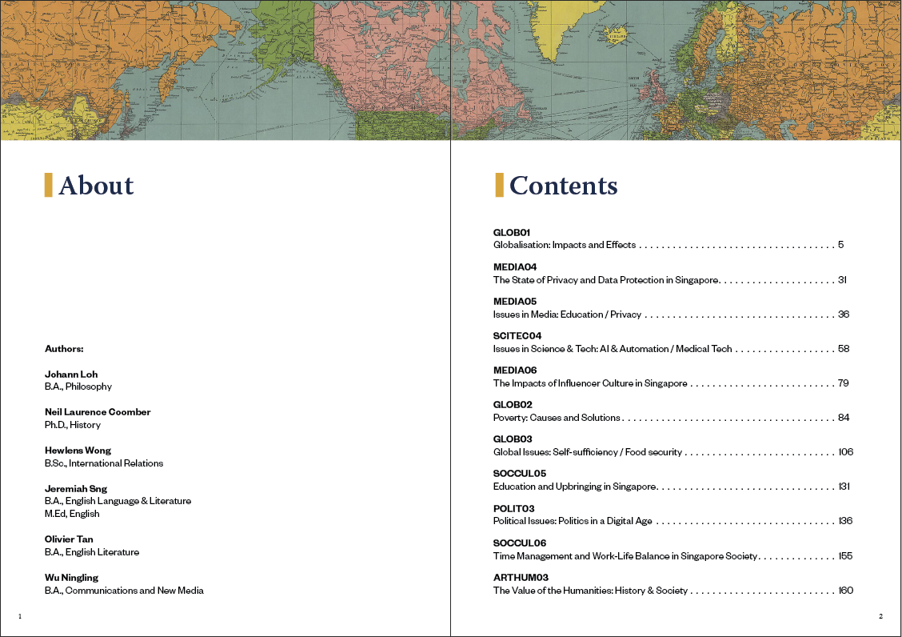
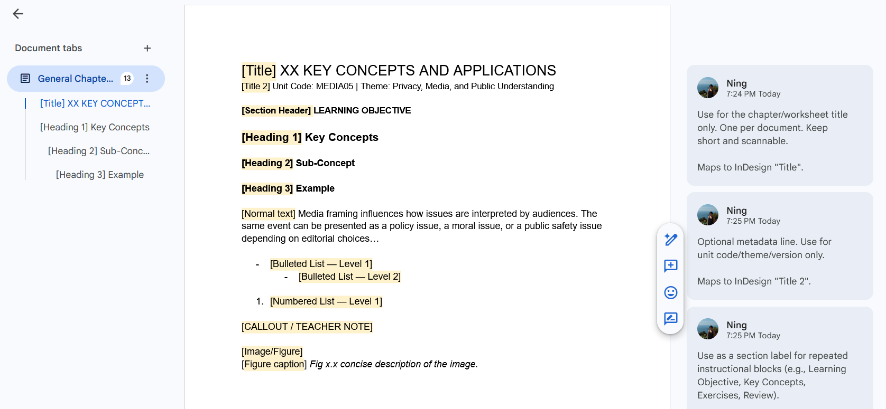
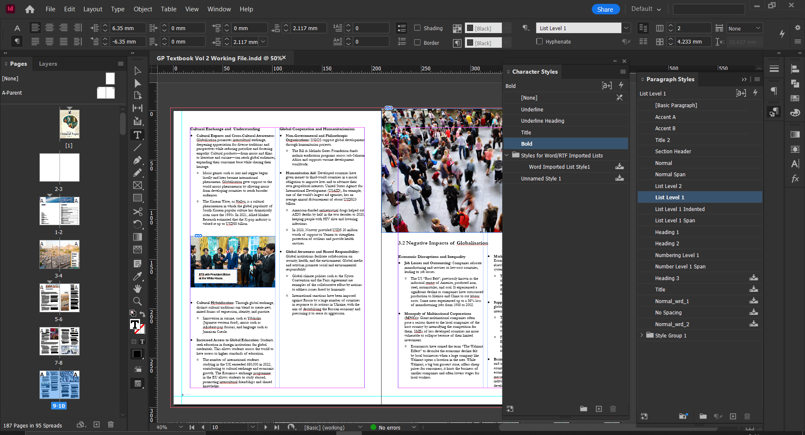

Scaling Content Production at Academia Education
Content Strategy, Technical Communication & Editorial Writing
📊 At a Glance
~2 weeks cut from production time
100+ students and educators reached
1 pipeline draft → standards → layout → QA → release
0 vendors external layout dependency eliminated
🗺️ Context
Academia’s instructional materials were spread across Drive folders, written by multiple contributors without shared conventions, and outsourced for layout to a vendor whose output failed basic print standards.
❌ Before
- Scattered Docs across folders with overlapping ownership
- No shared structure, formatting, or voice
- Drafts needed heavy reformatting before layout
- Vendor output failed print guidelines
- High rework, unreliable delivery
✅ After
- Standardised template with one source of truth
- Google Docs structure aligned to InDesign styles
- Defined pipeline from draft to print-ready PDF
- QA process with two explicit review passes
📝 Research, Writing & Editorial Work
⚡ Challenge:
The publication covered 11 topics across politics, media, science, and culture. Chapters came from multiple contributors with different writing styles and levels of research depth, and all of it had to meet the same standard for a specific audience: Singapore A-level students preparing for Paper 1.

Researched and wrote original chapters covering topics including economics, globalisation, food security, and AI and automation. Drew on academic sources, policy documents, and current affairs to keep content accurate and examination-relevant. Editorial passes for tone, accuracy, and instructional clarity were conducted on contributor chapters to ensure consistency.
✅ Outcomes
- 11 topics researched, written, and editorially reviewed across a 180+ page publication
- Fact-checked against academic, policy, and journalistic sources
- Consistent voice and register across all contributor chapters
✏️ Content Style Guidelines
⚡ Challenge:
Multiple contributors meant multiple instincts about what a heading, caption, or exercise instruction should contain. Without shared conventions, every draft needed editorial intervention before it could be edited for content.
Developed a content style guide covering four areas: structure (how chapters open, how sections close), labelling (heading and caption conventions tied to content type), sequencing (exercises follow the concept they apply, with explicit back-references), and voice (authoritative but not distant—consistent register across all contributors regardless of subject area). Guidelines were written into the authoring template directly so they were encountered in context, not as a separate document contributors had to remember to consult.
| ❌ Before | ✅ After |
|---|---|
| “See the worksheet below for practice” | “Complete Exercise 3.2 before reading the next section—it applies the concept above.” |
| Heading: “Notes” | Heading: “Key Concepts—Chapter 3” |
| Three contributor versions of the same intro | Single opening: scope, audience, and learning objective in the first paragraph |
| Caption: “Figure 1” | Caption: “Figure 1—Annotated diagram of X and Y relationship (refer to Section 2.3)” |
| Formal academic in one chapter, casual in the next | Consistent register: authoritative but not distant, precise but not jargon-heavy |
| Exercises assume knowledge not yet introduced | Exercises follow concept introduction, with explicit back-reference |
✅ Outcomes
- Consistent labelling, voice, and sequencing across all contributor drafts
- Editorial intervention reduced—drafts arrived closer to publishable standard
- Guidelines embedded in the template meant compliance required no extra effort
📄 Authoring Template → InDesign Pipeline
⚡ Challenge:
Without style alignment between Docs and InDesign, even well-structured drafts required manual reformatting on every import. Educators do not have the time between classes to ensure perfect formatting, a simple universal template was needed.
Built a Google Docs template that embedded conventions directly into the structure—heading levels, caption formats, and bulleting. Mapped every Docs content type to a corresponding InDesign paragraph or object style, so imported content landed close to final format. Managed the full style library in InDesign: defining, naming, and maintaining paragraph styles, character styles, and object styles across master pages to ensure consistency as chapters were added. Built and operated the production system end-to-end—placing and flowing content, managing linked assets, enforcing typographic hierarchy and grid-based spacing, and preparing pages for export and QA.


Google Docs template with styles mapped directly to a ready for print InDesign template✅ Outcomes
- Shared Docs template replaced ad hoc formatting across all contributors
- Docs-to-InDesign style mapping made import predictable—minimal reformatting per chapter
- Full InDesign style library maintained across master pages and all chapter files
- Consistent typographic hierarchy and layout grid across the full release
- Repeatable layout production
💥 Impact
~2 weeks cut from production time Governed template and defined workflow eliminated formatting cleanup, version chasing, and the reformatting bottleneck between Docs and InDesign.
Vendor dependency eliminated Repeatable in-house pipeline—Google Docs → InDesign → QA—replaced external layout that cost money and still required rework.
A system that outlasted the internship The durable outcome was the documentation. Pipeline, standards and QA checklist future cohorts could run without the original builders.
👉 What’s Next
- Style guide expansion—add terminology standards, tone by content type, and glossary management
- Version control migration—move beyond Google Docs versioning for cleaner history and easier audits at scale